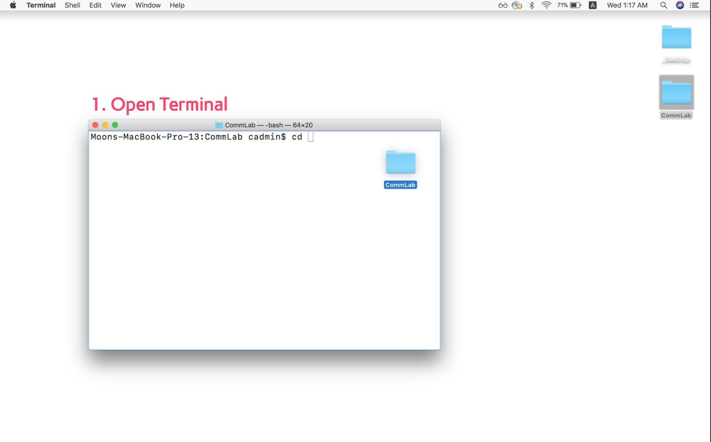
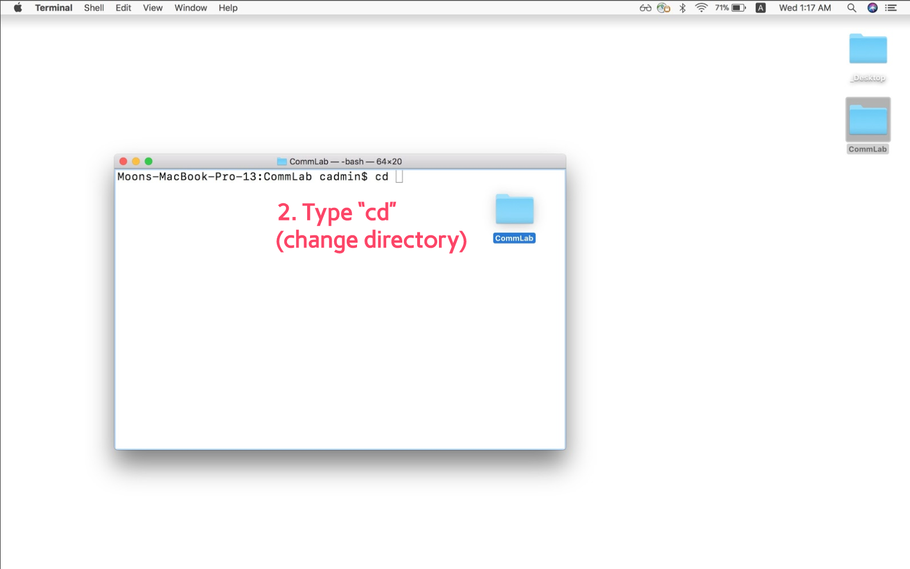
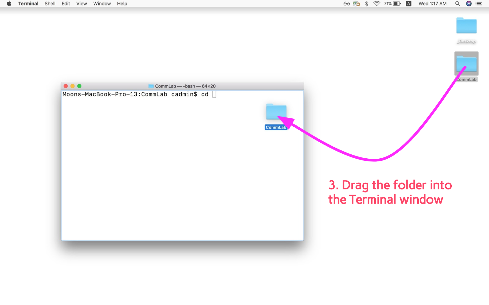
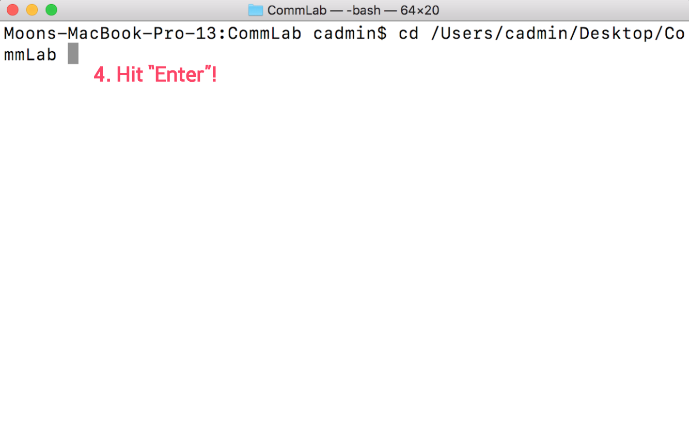
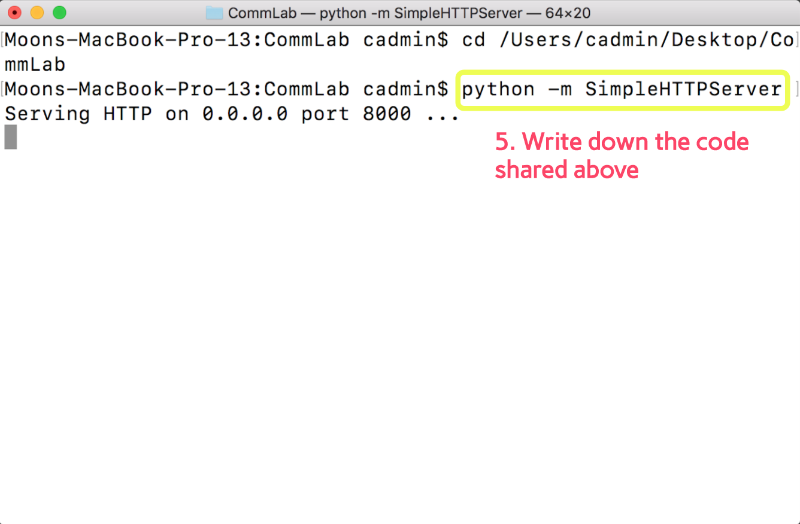
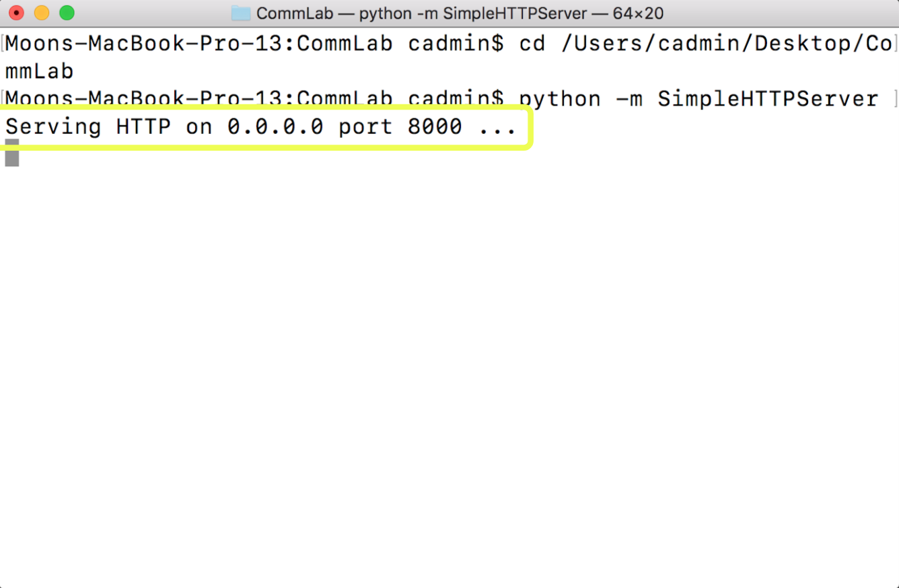

p5.sound Library: Part 1
NOTE: This workshop is broken into 3 parts, due to come constraints with the number of canvases using the p5.sound library.
p5.sound library extends p5 with Web Audio functionality including audio input, playback, analysis and synthesis. p5.sound library is provided as a SEPARATE javascript file, which means that we have to include this in addition to the main p5 library.
Remember that the library files can be downloaded from the p5 website. There is also an option to use the library files without downloading through CDN.
If you have downloaded p5.js library files, conventionally, you would create a folder inside the directory of the folder you are working in called "libraries" or "libs" and copy the library files. Next we need to reference this file so we can use it in our html pages.
<script type="text/javascript" src="js/libs/p5.js"></script>
<script type="text/javascript" src="js/libs/p5.sound.js"></script>
If you are going with the CDN option, which means you are referencing to a file on the web, you should be doing this instead:
<script language="javascript" src="https://cdnjs.cloudflare.com/ajax/libs/p5.js/0.5.8/p5.js"></script>
<script language="javascript" src="https://cdnjs.cloudflare.com/ajax/libs/p5.js/0.5.8/p5.sound.js"></script>
Setting up python SimpleHTTPServer
When using the p5.sound library, we will need to run our web pages on localhost. The reason for this is because when dealing with external files in javascript, there are some restrictions to using an "external file" that can be overcome by running a localhost, a local server within your computer. Below illustrate steps to run HTML files inside of a folder of your computer on localhost. Images by MOQN.
 First, you need to open "Terminal". It is available in all Mac computers by default, and you can find this by searching your applications.
Next, type in the command cd , which stands for Change Directory.
 Put a spacebar character after the cd command, then drag in the folder that contains the web pages you want to run on localhost onto the Terminal application. The dragging in of the folder should enter in the path to the folder on the Terminal application, which will look something like this:
cd Users/userName/Desktop/FolderName
Once you see something like above, press enter!
 Next, type on the Terminal application the following code:
python -m SimpleHTTPServer
, then press enter! After a few seconds, you should see the Terminal application say something like below:
Serving HTTP on 0.0.0.0 port 8000 ...
The number after "port" means the number you need to enter after localhost + colon (:). This number will usually be 8000.
Now, you will be able to view the index.html file inside of the folder you dragged into the Terminal application by going to http://localhost:8000 on your browser.
We are ready to start using p5.sound library!
Using an audio file with p5
You can use an audio file inside of a p5 sketch for various uses, such as to do sound analysis (we will get to this later) and to trigger it at specified situations. In order to use audio files, we use the loadSound() function. loadSound() function should generally be saved to a variable, in which case the variable can be used to refer to the sound file inside the sketch. It should also be called inside of the preload() function, to load the audio files before running setup(). This ensures that the file is fully loaded to be playable and usable all the way through without buffering.
var sound;
function preload(){
sound = loadSound('audio/0.mp3');
}
All af the javascript functions that you already know to control the audio file exist within the p5.sound libary as well, such as, play() and pause(), in addition to many others. Below are a selection of available functions that p5.sound library provides to control the audio file.
- play(): Plays the audio file.
- loop(): Loops the audio file.
- pause(): Pauses the audio file.
- stop(): Stops the audio file.
- isPlaying(): Returns true if audio file is currently playing.
- setVolume(vol): Sets the volume to the specified vol. Minimum of 0.0 (silence) and maximum of 1.0 (full volume).
- rate(r): Set the playback rate of audio file of specified r.
- duration(): Returns the duration of the audio file in seconds.
- currentTime(): Returns the current playback position in seconds.
- jump(time): Jumps the playback position to the specified time.
The above functions that control the audio file need to be preceded by the name of the variable that you saved the loadSound() function to, followed by a dot(.) See the example code below:
var sound;
function preload(){
sound = loadSound('audio/0.mp3');
}
function setup() {
sound.loop();
}
If you set the audio file to play or loop inside the setup() function, it will begin to play / loop the audio file as soon as the audio file has finished loading and is ready to play.
Below is a simple example of using mousePressed() to play() and pause() audio file, and change the background accordingly. It uses the isPlaying() function to check if the sound file is already playing. If isPlaying() is true, pause() the audio, else, play() the audio. Using the same if-else-statement structure inside the draw() function, set the background to red if it audio is playing and to blue if the audio is not playing.
var sound;
function preload() {
sound = loadSound('assets/music/0.mp3');
}
function setup() {
createCanvas(windowWidth, windowHeight);
}
function draw() {
if (sound.isPlaying() == true) {
background(255, 0, 0);
} else {
background(0, 0, 255);
}
}
function mousePressed() {
if (sound.isPlaying() == true) {
sound.pause();
} else {
sound.play();
}
}
Using microphone input
You can access the microphone of your computer within the p5 sketch using the p5.sound library. The p5.sound library provides p5.AudioIn object that you can use to access and start using the microphone input. See code below:
var mic;
function setup() {
mic = new p5.AudioIn();
mic.start();
}
In the setup() function, we create a new p5.AudioIn object to access the microphone, and we start receiving the microphone input with the start() function.
You can also use the getLevel() function with the p5.AudioIn object, to get the amplitude (volume) of the microphone input. The getLevel() function will return a number between 0 (silence) and 1 (maximum volume microphone can detect). Below example uses the amplitude of the microphone input to change the width and height of the ellipse.
var mic;
function setup() {
createCanvas(windowWidth, windowHeight);
mic = new p5.AudioIn();
mic.start();
noStroke();
}
function draw() {
background(0, 30);
var level = mic.getLevel();
ellipse(width / 2, height / 2, level * 500, level * 500)
}